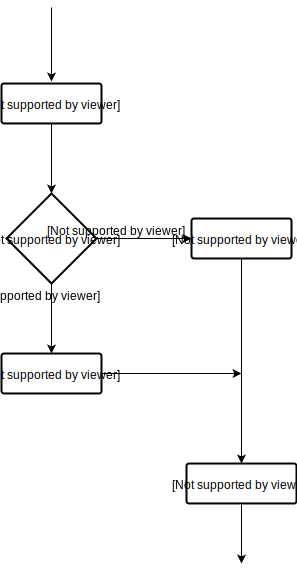
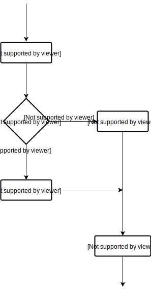

Gestione degli errori
In questa sezione spiegheremo come gestire gli eventuali errori che si presentano durante l'esecuzione del nostro codice Python. In particolare, vedremo cosa è una eccezione, come sollevarla e infine come gestirla.
Eccezioni
Un'eccezione è un evento che si verifica durante l'esecuzione di un programma e che ne interrompe il normale flusso delle istruzioni. In generale, quando uno script Python incontra una situazione a cui non può far fronte, solleva un'eccezione.
In particolare, quando un'eccezione viene sollevata, è necessario gestirla immediatamente, altrimenti l'esecuzione termina prima del previsto. Per comprendere meglio quanto detto, consideriamo lo script seguente:
"""
Questo programma considera una lista di dividendi e una lista
di divisori, e poi inserisce i risultati di ciascuna divisione
in una lista di risultati.
"""
# definiamo le liste di dividendi e divisori
dividendo = [1,24,3,12]
divisore = [1,2,0,4]
# inizializziamo i risultati a None
risultato = [None, None, None, None]
# iteriamo sulle liste per calcolare il risultato
for i in range(len(dividendo)):
risultato[i] = dividendo[i] / divisore[i]
print(risultato)
Se proviamo ad eseguirlo, otterremo il seguente messaggio di errore:
Traceback (most recent call last):
File "script.py", line 16, in <module>
risultato[i] = dividendo[i] / divisore[i]
ZeroDivisionError: division by zero
Possiamo vedere che è stata sollevata l'eccezione
ZeroDivisionError, questo perchè nel terzo ciclo di iterazione divisore[2] = 0. In particolare, l'esecuzione si è subito interrotta, senza dare la possibilità di terminare il ciclo di iterazioni, né tantomeno di stampare il risultato delle divisioni. In gergo si dice che il programma si è chiuso inaspettatamente, o che ha crashato. Vogliamo quindi evitare questo comportamento gestendo opportunamente l'errore che si è presentato. Vedremo nelle prossime sottosezioni come fare.
Le eccezioni standard
Prima di proseguire con la gestione delle eccezioni, proponiamo un elenco delle principali eccezioni standard incluse in Python. Per un elenco completo, si consiglia di visualizzare la documentazione ufficiale di Python.
| Eccezione | Descrizione |
|---|---|
| Exception | Classe base per tutte le eccezioni |
| IndentationError | Sollevata quando vi è un errore di indentazione |
| SyntaxError | Sollevata quando è presente un errore di sintassi |
| NameError | Sollevata quando un identificatore non viene trovato nel namespace |
| ValueError | Sollevata quando il valore fornito a una funzione non è valido |
| IndexError | Sollevata quando un indice non viene trovato nella sequenza |
| KeyError | Sollevata quando una specifica chiave non è presente nel dizionario |
| AritmeticError | Classe base per tutte le eccezioni che riguardano calcoli numerici |
| ZeroDivisionError | Sollevata quando si cerca di dividere un numero per zero |
| FloatingPointError | Sollevata quando un calcolo a virgola mobile fallisce |
| OverflowError | Sollevata quando un numero eccede il limite massimo previsto |
try...except...else...finally
A questo punto vediamo come sfruttare l'istruzione
try...except...else...finally per gestire i nostri errori. Anzitutto, la sintassi prevista per il suo utilizzo è:
try:
blocco try
except Exception:
blocco except
else:
blocco else
finally:
blocco finally
La logica del suddetto statement è la seguente: il programma prova (ossia

In maniera simile a quanto accade con lo statement
A questo punto siamo pronti a correggere lo script visto in precedenza:
try) ad eseguire le istruzioni contenute nel blocco try; se durante la sua esecuzione viene sollevata l'eccezione Exception, viene eseguito il blocco except; se invece non viene sollevata alcuna eccezione, viene eseguito il blocco else; infine, viene sempre eseguito il blocco finally. Il seguente diagramma di flusso sintetizza quanto appena detto.
In maniera simile a quanto accade con lo statement
elif, è possibile introdurre più di un blocco except, in modo da gestire diverse tipologie di eccezioni. Inoltre, gli statement else e finally sono opzionali.A questo punto siamo pronti a correggere lo script visto in precedenza:
"""
Questo programma considera una lista di dividendi e una lista
di divisori, e poi inserisce i risultati di ciascuna divisione
in una lista di risultati.
"""
# definiamo le liste di dividendi e divisori
dividendo = [1,24,3,12]
divisore = [1,2,0,4]
# inizializziamo i risultati a None
risultato = [None, None, None, None]
# iteriamo sulle liste per calcolare il risultato
for i in range(len(dividendo)):
try:
risultato[i] = dividendo[i] / divisore[i]
except ZeroDivisionError:
print('[ERRORE] Il divisore non può essere uguale a 0.')
print(risultato)
Stavolta, mandando in esecuzione il programma, otterremo l'output:
[ERRORE] Il divisore non può essere uguale a 0.
[1.0, 12.0, None, 3.0]
Si noti in particolare come l'intero ciclo di esecuzione del programma viene completato, nonostante la presenza di un divisore pari a zero. Abbiamo quindi evitato l'interruzione inaspettata dello script e, al contempo, abbiamo fornito un messaggio di errore significativo.
raise
Chiudiamo questa sezione spiegando come sollevare una eccezione. La keyword introdotta a tal fine dal linguaggio Python è
raise. La sintassi per il suo utilizzo è:
raise Exception
dove
Exception identifica il tipo di eccezione da sollevare (as es., ValueError). Possiamo quindi modificare il precedente script in modo da fornire una gestione più completa dell'errore, in cui è il programmatore, e non l'interprete, a sollevare l'eccezione:
def dividi(x,y):
"""
Questa funzione implementa la divisione x / y, accertandosi che il divisore
non sia nullo, e sollevando una eccezione qualora lo sia.
"""
if y == 0:
raise ValueError('[ERRORE] Il divisore non può essere uguale a 0.')
return x / y
dividendo = [1,24,3,12]
divisore = [1,2,0,4]
risultato = [None, None, None, None]
for i in range(len(dividendo)):
try:
risultato[i] = dividi(dividendo[i],divisore[i])
except ValueError as error: # utilizziamo un alias per poter stampare il messaggio di errore
print(error)
print(risultato)
In questo script abbiamo definito la funzione
dividi() in cui viene implementata la divisione di due numeri. All'interno della funzione viene verificato che il divisore sia non nullo e, qualora lo sia, viene sollevata l'eccezione ValueError, in cui si specifica il relativo messaggio di errore. Eseguendo lo script, otterremo il seguente risultato:
[ERRORE] Il divisore non può essere uguale a 0.
[1.0, 12.0, None, 3.0]